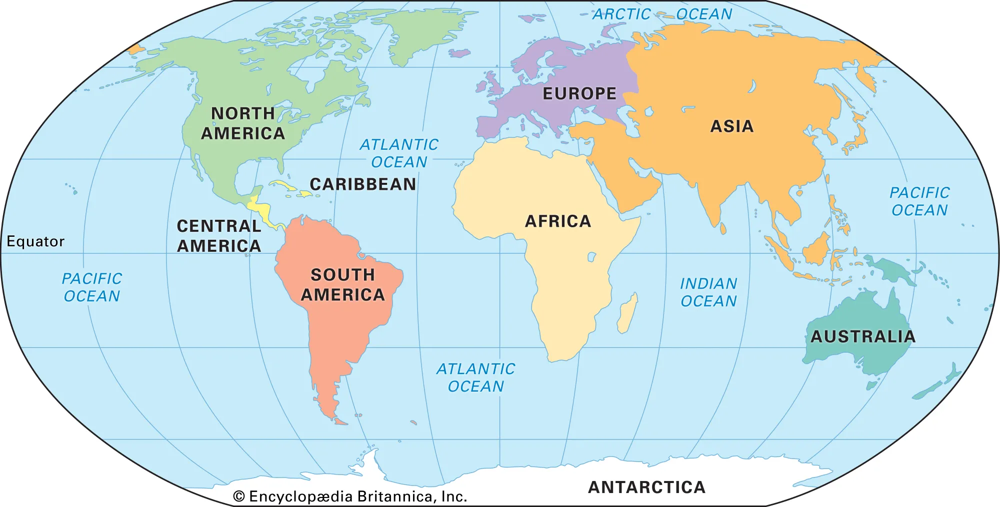
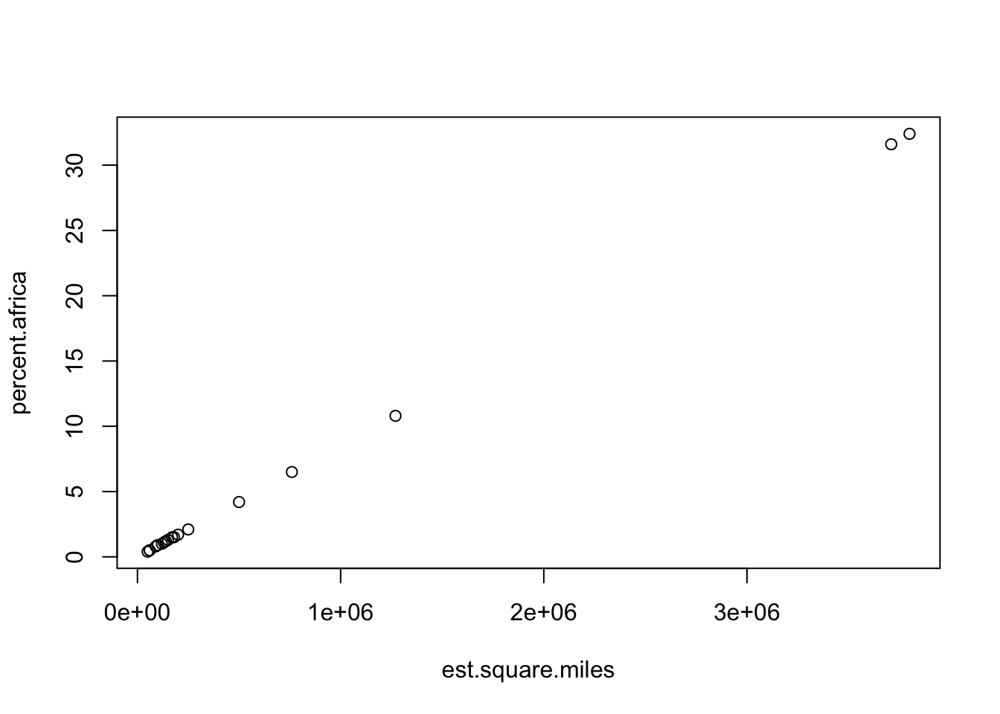
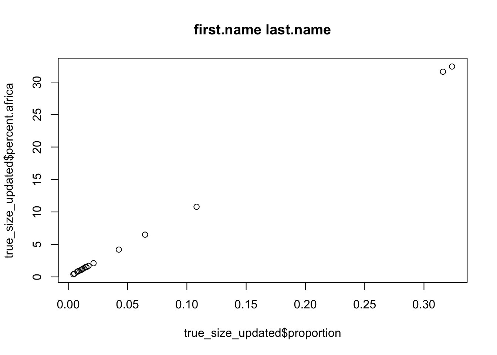

getwd()Case Study 2, Part 1: The True Size of Africa
DATA 202 - Alexander
In Case Study 2, we will explore the social politics of maps and globally oriented data to help us make sense of what we mean by a “population.” The case study will integrate a series of new packages, functions, and code to support our explorations.
There are two parts to this case study, this is part 1.
Learning Objectives
In this case study component, you will be introduced to the dplyr package, which is one of the many packages in the tidyverse. The tidyverse is a set of packages that will be used for cleaning and organizing data.
Learning Activities
By the end of this case study you will be able to:
- Install and/or update R packages
- Assign data frames to different names for efficient exploration
- Generate a set of outputs using the
dplyrpackage - Overwrite a data frame while using the pipe operator
- Produce simple plots using data located in an
Rpackage
Developing a workflow
Coding workflows are an essential component of project completion.
When analyzing data, it is important to understand the possible intersections between the context, content, and code. The best way to explore these relationships is by conducting a literature review. Reading about what others have done is more valuable than starting a workflow prematurely.
Time may be used inefficiently and clear but standard outputs provide narratives that can likely be confirmed by or support what is already in the research literature. Without an understanding of these connections, analytic outputs may do less to move our understanding of issues forward.
This case study will help you explore and create your own workflow. The goal of a coding workflow is not to simply copy and paste arguments that you find. Instead, you want to develop clear pathways to identifying solutions as you work with your data.
The topics in case study 2 cover one way to approach a new data set. In this case study, you’ll cover how to load data from a package, generate a set of outputs using small code chunks, and produce and submit a few simple plots.
Part 0: Pre-case study tasks
Check your working directory
Start a new R Script
Write a preamble
Install and/or update packages and load libraries
Task 0.1: Check your working directory
In your console, type in the following code to ensure you are in the desired directory:
If you are not in the desired directory, you can change your directory using the associated path. This path should be the same as the project folder that you plan to work out of and set up in lecture five.
# insert your desired path in the parenthesis and remove the #
# setwd("/your/working/directory/goes/here") You can add a new sub-folder manually or under the Files tab in the RStudio IDE.
Task 0.2: Start a new RMarkdown file
Once you have confirmed that you are in the correct directory, start a new RMarkdown file (.Rmd) and write your preamble.
---
title: "Case Study 2"
author: "Your Full Name"
date: "2024-09-09"
output:
pdf_document: default
html_document:
theme: flatly
editor_options:
markdown:
wrap: sentence
---Task 0.3: Write setup code chunks
# ```{r, eval=F}
# install.packages("devtools")
# library(devtools)Task 0.4: Packages and libraries
# install package
# install.packages("tidyverse", repos = "http://cran.us.r-project.org")
# install.packages("remotes", repos = "http://cran.us.r-project.org")
# load the necessary libraries
library(tidyverse) #collection of R packages designed for data science
library(dplyr)
library(remotes)The dplyr package supports data analyst with efficient data manipulation. As a part of the tidyverse package, the functions included in dplyr we loaded earlier will help you generate efficient workflows. Though, in reality, most analysts transition between classic code found widely on the internet and the more recent dplyr commands.
The remotes library will allow you to remotely install critstats data.
Part 1: The true size of Africa
In this part of the case study, you will complete the following tasks:
Explore notes on the social politics of maps
Examine the
true_sizedata in thecritstatspackageConstruct a response to the issue of misrepresentation in maps

Task 1.2: Load the true_size data
Task 1.2.1: Install the critstats package
To begin, we will install and/or update the installation of critstats.
# use the remote install function to call in your data
remotes::install_github("professornaite/critstats", force=TRUE)
# load the `critstats` library
library(critstats)
# update the `critstats` package if needed
# update.packages("critstats")Task 1.2.2: Call the true_size data
critstats::true_sizeTask 1.2.3: Inspect the true_size documentation
Using the ??data prompt, you can inspect the contents of the data frame.
??critstats::true_sizeAs noted before, this serves as the data’s documentation and is the basis of a code book (or codebook). A codebook contains very specific details about a database, data set, and the variables each contains. We will explore codebooks more in the future.
Task 1.3: Explore the true_size data
Task 1.3.1: Assign the true_size data frame to df1
Use the assignment operator to assign the true_size data frame to the object df1.
df1 <- critstats::true_sizeTask 1.3.2: Inspect your data
Use the str() function to inspect your data frame.
str() displays the structure of R objects.
str(df1)tibble [18 × 4] (S3: tbl_df/tbl/data.frame)
$ Country : chr [1:18] "United States" "China" "India" "Mexico" ...
$ percent.africa: num [1:18] 32.4 31.6 10.8 6.5 4.2 2.1 1.7 1.5 1.5 1.3 ...
$ area.sq.km : num [1:18] 9.83 9.6 3.29 1.96 1.29 0.64 0.51 0.46 0.45 0.38 ...
$ area.sq.mi : num [1:18] 3.8 3.71 1.27 0.76 0.5 0.25 0.2 0.18 0.17 0.15 ...You can also run similar commands separately:
Task 1.3.2a: dim()
Use the dim() function to check the dimensions of your data.
# check the dimensions of your data
dim(df1)[1] 18 4Note that the dimensions are reported as a \(n \times m\) matrix with \(n\) rows and \(m\) columns.
Task 1.3.2b: view()
Use the View() function to see all of your data in a separate window.
# view the data
View(df1)Task 1.3.2c: glimpse()
Take a glimpse of your data using the glimpse() function.
# get a glimpse of your data frame
glimpse(df1)Rows: 18
Columns: 4
$ Country <chr> "United States", "China", "India", "Mexico", "Peru", "F…
$ percent.africa <dbl> 32.4, 31.6, 10.8, 6.5, 4.2, 2.1, 1.7, 1.5, 1.5, 1.3, 1.…
$ area.sq.km <dbl> 9.83, 9.60, 3.29, 1.96, 1.29, 0.64, 0.51, 0.46, 0.45, 0…
$ area.sq.mi <dbl> 3.80, 3.71, 1.27, 0.76, 0.50, 0.25, 0.20, 0.18, 0.17, 0…Task 1.3.2d: head()
View the first six observations in your data using the head() function.
# view the "top" of your data
head(df1)# A tibble: 6 × 4
Country percent.africa area.sq.km area.sq.mi
<chr> <dbl> <dbl> <dbl>
1 United States 32.4 9.83 3.8
2 China 31.6 9.6 3.71
3 India 10.8 3.29 1.27
4 Mexico 6.5 1.96 0.76
5 Peru 4.2 1.29 0.5
6 France 2.1 0.64 0.25Task 1.3.2e: tail()
View the last six observations in your data using the tail() function.
# view the "bottom" of your data
tail(df1)# A tibble: 6 × 4
Country percent.africa area.sq.km area.sq.mi
<chr> <dbl> <dbl> <dbl>
1 Italy 1 0.3 0.12
2 New Zealand 0.9 0.27 0.1
3 United Kingdom 0.8 0.24 0.09
4 Nepal 0.5 0.15 0.06
5 Bangladesh 0.5 0.15 0.06
6 Greece 0.4 0.13 0.05Task 1.3.2f: Specify n in head() or tail()
You can change the number of observations viewed by being more explicit in your code.
head(df1, n = 10) # view the top 10 observations# A tibble: 10 × 4
Country percent.africa area.sq.km area.sq.mi
<chr> <dbl> <dbl> <dbl>
1 United States 32.4 9.83 3.8
2 China 31.6 9.6 3.71
3 India 10.8 3.29 1.27
4 Mexico 6.5 1.96 0.76
5 Peru 4.2 1.29 0.5
6 France 2.1 0.64 0.25
7 Spain 1.7 0.51 0.2
8 Papua New Guinea 1.5 0.46 0.18
9 Sweden 1.5 0.45 0.17
10 Japan 1.3 0.38 0.15tail(df1, n = 3) # view the bottom 3 observations# A tibble: 3 × 4
Country percent.africa area.sq.km area.sq.mi
<chr> <dbl> <dbl> <dbl>
1 Nepal 0.5 0.15 0.06
2 Bangladesh 0.5 0.15 0.06
3 Greece 0.4 0.13 0.05Task 1.3.2g: summary()
Get a summary of all variables in the data set.
# get a summary of your data frame
summary(df1) Country percent.africa area.sq.km area.sq.mi
Length:18 Min. : 0.400 Min. :0.1300 Min. :0.0500
Class :character 1st Qu.: 0.925 1st Qu.:0.2775 1st Qu.:0.1050
Mode :character Median : 1.400 Median :0.4150 Median :0.1600
Mean : 5.556 Mean :1.6850 Mean :0.6522
3rd Qu.: 3.675 3rd Qu.:1.1275 3rd Qu.:0.4375
Max. :32.400 Max. :9.8300 Max. :3.8000 Task 1.4: Use dplyr verbs on true_size
In this section, we will review the dplyr verbs that help us get our data into a format that works for our analysis. These verbs can be used in any order. We can also use the pipe operator %>% and use multiple verbs in a single code chunk.
Task 1.4.1: Subset columns (variables) using select()
The select() command retains only those columns that are listed.
It uses the logic select(data, variable1, variable2, ...).
# keep only the Country and percent.africa columns
select(df1, Country, percent.africa) # A tibble: 18 × 2
Country percent.africa
<chr> <dbl>
1 United States 32.4
2 China 31.6
3 India 10.8
4 Mexico 6.5
5 Peru 4.2
6 France 2.1
7 Spain 1.7
8 Papua New Guinea 1.5
9 Sweden 1.5
10 Japan 1.3
11 Germany 1.2
12 Norway 1.1
13 Italy 1
14 New Zealand 0.9
15 United Kingdom 0.8
16 Nepal 0.5
17 Bangladesh 0.5
18 Greece 0.4# keep only the Country and area.sq.mi columns
select(df1, Country, area.sq.mi)# A tibble: 18 × 2
Country area.sq.mi
<chr> <dbl>
1 United States 3.8
2 China 3.71
3 India 1.27
4 Mexico 0.76
5 Peru 0.5
6 France 0.25
7 Spain 0.2
8 Papua New Guinea 0.18
9 Sweden 0.17
10 Japan 0.15
11 Germany 0.14
12 Norway 0.13
13 Italy 0.12
14 New Zealand 0.1
15 United Kingdom 0.09
16 Nepal 0.06
17 Bangladesh 0.06
18 Greece 0.05We can also subset columns by deleting others
To do so, we use a minus sign ahead of the column names.
# remove the area.sq.mi variable
select(df1, -area.sq.km)# A tibble: 18 × 3
Country percent.africa area.sq.mi
<chr> <dbl> <dbl>
1 United States 32.4 3.8
2 China 31.6 3.71
3 India 10.8 1.27
4 Mexico 6.5 0.76
5 Peru 4.2 0.5
6 France 2.1 0.25
7 Spain 1.7 0.2
8 Papua New Guinea 1.5 0.18
9 Sweden 1.5 0.17
10 Japan 1.3 0.15
11 Germany 1.2 0.14
12 Norway 1.1 0.13
13 Italy 1 0.12
14 New Zealand 0.9 0.1
15 United Kingdom 0.8 0.09
16 Nepal 0.5 0.06
17 Bangladesh 0.5 0.06
18 Greece 0.4 0.05# remove the listed variables in the data frame
select(df1, -area.sq.km, -area.sq.mi) # A tibble: 18 × 2
Country percent.africa
<chr> <dbl>
1 United States 32.4
2 China 31.6
3 India 10.8
4 Mexico 6.5
5 Peru 4.2
6 France 2.1
7 Spain 1.7
8 Papua New Guinea 1.5
9 Sweden 1.5
10 Japan 1.3
11 Germany 1.2
12 Norway 1.1
13 Italy 1
14 New Zealand 0.9
15 United Kingdom 0.8
16 Nepal 0.5
17 Bangladesh 0.5
18 Greece 0.4Task 1.4.2: Filter rows (cases) using filter()
filter() allows us to select rows based on specific criteria.
# keep only those rows where the percent.africa value is grater than 30
filter(df1, percent.africa > 30)# A tibble: 2 × 4
Country percent.africa area.sq.km area.sq.mi
<chr> <dbl> <dbl> <dbl>
1 United States 32.4 9.83 3.8
2 China 31.6 9.6 3.71# keep only those rows where the percent.africa value is less than 1
filter(df1, percent.africa < 1)# A tibble: 5 × 4
Country percent.africa area.sq.km area.sq.mi
<chr> <dbl> <dbl> <dbl>
1 New Zealand 0.9 0.27 0.1
2 United Kingdom 0.8 0.24 0.09
3 Nepal 0.5 0.15 0.06
4 Bangladesh 0.5 0.15 0.06
5 Greece 0.4 0.13 0.05# keep only those rows where percent.africa is less than 10 and greater than 1
filter(df1, percent.africa < 10 & percent.africa > 1)# A tibble: 9 × 4
Country percent.africa area.sq.km area.sq.mi
<chr> <dbl> <dbl> <dbl>
1 Mexico 6.5 1.96 0.76
2 Peru 4.2 1.29 0.5
3 France 2.1 0.64 0.25
4 Spain 1.7 0.51 0.2
5 Papua New Guinea 1.5 0.46 0.18
6 Sweden 1.5 0.45 0.17
7 Japan 1.3 0.38 0.15
8 Germany 1.2 0.36 0.14
9 Norway 1.1 0.32 0.13# keep only those rows where Country is equal to "China"
filter(df1, Country == "China")# A tibble: 1 × 4
Country percent.africa area.sq.km area.sq.mi
<chr> <dbl> <dbl> <dbl>
1 China 31.6 9.6 3.71Notice the use of a == equal sign when referencing a cell’s value. This will become an important component of base logic and analysis when writing code.
Task 1.4.3: Add/remove columns (variables) using mutate()
We use mutate() to create new variables from existing variables.
It is not clear what area.sq.mi and area.sq.km refer to in our data. Further inspection and a bit of internet searching will show us that these values are in the millions and that they represent estimates.
We can transform these as follows:
# add a new column with a more accurate label for land area estimate (sq mi)
mutate(df1, est.square.miles = df1$area.sq.mi * 1000000) # A tibble: 18 × 5
Country percent.africa area.sq.km area.sq.mi est.square.miles
<chr> <dbl> <dbl> <dbl> <dbl>
1 United States 32.4 9.83 3.8 3800000
2 China 31.6 9.6 3.71 3710000
3 India 10.8 3.29 1.27 1270000
4 Mexico 6.5 1.96 0.76 760000
5 Peru 4.2 1.29 0.5 500000
6 France 2.1 0.64 0.25 250000
7 Spain 1.7 0.51 0.2 200000
8 Papua New Guinea 1.5 0.46 0.18 180000
9 Sweden 1.5 0.45 0.17 170000
10 Japan 1.3 0.38 0.15 150000
11 Germany 1.2 0.36 0.14 140000
12 Norway 1.1 0.32 0.13 130000
13 Italy 1 0.3 0.12 120000
14 New Zealand 0.9 0.27 0.1 100000
15 United Kingdom 0.8 0.24 0.09 90000
16 Nepal 0.5 0.15 0.06 60000
17 Bangladesh 0.5 0.15 0.06 60000
18 Greece 0.4 0.13 0.05 50000Task 1.4.3a: Add new variables using the pipe %>%
We can also use the pipe operator to mutate the variable.
# we can create the same output when using the %>% (pipe)
df1 %>%
mutate(est.square.miles = df1$area.sq.mi * 1000000) # A tibble: 18 × 5
Country percent.africa area.sq.km area.sq.mi est.square.miles
<chr> <dbl> <dbl> <dbl> <dbl>
1 United States 32.4 9.83 3.8 3800000
2 China 31.6 9.6 3.71 3710000
3 India 10.8 3.29 1.27 1270000
4 Mexico 6.5 1.96 0.76 760000
5 Peru 4.2 1.29 0.5 500000
6 France 2.1 0.64 0.25 250000
7 Spain 1.7 0.51 0.2 200000
8 Papua New Guinea 1.5 0.46 0.18 180000
9 Sweden 1.5 0.45 0.17 170000
10 Japan 1.3 0.38 0.15 150000
11 Germany 1.2 0.36 0.14 140000
12 Norway 1.1 0.32 0.13 130000
13 Italy 1 0.3 0.12 120000
14 New Zealand 0.9 0.27 0.1 100000
15 United Kingdom 0.8 0.24 0.09 90000
16 Nepal 0.5 0.15 0.06 60000
17 Bangladesh 0.5 0.15 0.06 60000
18 Greece 0.4 0.13 0.05 50000# add a new column with a more accurate label for land area estimate (sq km)
df1 %>%
mutate(est.square.km = df1$area.sq.km * 1000000)# A tibble: 18 × 5
Country percent.africa area.sq.km area.sq.mi est.square.km
<chr> <dbl> <dbl> <dbl> <dbl>
1 United States 32.4 9.83 3.8 9830000
2 China 31.6 9.6 3.71 9600000
3 India 10.8 3.29 1.27 3290000
4 Mexico 6.5 1.96 0.76 1960000
5 Peru 4.2 1.29 0.5 1290000
6 France 2.1 0.64 0.25 640000
7 Spain 1.7 0.51 0.2 510000
8 Papua New Guinea 1.5 0.46 0.18 460000
9 Sweden 1.5 0.45 0.17 450000
10 Japan 1.3 0.38 0.15 380000
11 Germany 1.2 0.36 0.14 360000
12 Norway 1.1 0.32 0.13 320000
13 Italy 1 0.3 0.12 300000
14 New Zealand 0.9 0.27 0.1 270000
15 United Kingdom 0.8 0.24 0.09 240000
16 Nepal 0.5 0.15 0.06 150000
17 Bangladesh 0.5 0.15 0.06 150000
18 Greece 0.4 0.13 0.05 130000Task 1.4.3b: Add new variables and remove old variables
It is easiest to put all of the verbs together in a single chunk of code.
# remove the old column; use the pipe command to do both operations at once
df1 %>%
mutate(est.square.miles = df1$area.sq.mi * 1000000) %>%
mutate(est.square.km = df1$area.sq.km * 1000000) %>%
select(-area.sq.mi, -area.sq.km) # remove the columns we do not want# A tibble: 18 × 4
Country percent.africa est.square.miles est.square.km
<chr> <dbl> <dbl> <dbl>
1 United States 32.4 3800000 9830000
2 China 31.6 3710000 9600000
3 India 10.8 1270000 3290000
4 Mexico 6.5 760000 1960000
5 Peru 4.2 500000 1290000
6 France 2.1 250000 640000
7 Spain 1.7 200000 510000
8 Papua New Guinea 1.5 180000 460000
9 Sweden 1.5 170000 450000
10 Japan 1.3 150000 380000
11 Germany 1.2 140000 360000
12 Norway 1.1 130000 320000
13 Italy 1 120000 300000
14 New Zealand 0.9 100000 270000
15 United Kingdom 0.8 90000 240000
16 Nepal 0.5 60000 150000
17 Bangladesh 0.5 60000 150000
18 Greece 0.4 50000 130000These values seem to represent the data more clearly.
Task 1.4.4: Rename a column using rename()
We can also use rename() to modify a column’s label.
df1 %>%
mutate(est.square.miles = df1$area.sq.mi * 1000000) %>%
mutate(est.square.km = df1$area.sq.km * 1000000) %>%
select(-area.sq.mi, -area.sq.km) %>%
rename(country = Country) # make the 'C' in country lowercase# A tibble: 18 × 4
country percent.africa est.square.miles est.square.km
<chr> <dbl> <dbl> <dbl>
1 United States 32.4 3800000 9830000
2 China 31.6 3710000 9600000
3 India 10.8 1270000 3290000
4 Mexico 6.5 760000 1960000
5 Peru 4.2 500000 1290000
6 France 2.1 250000 640000
7 Spain 1.7 200000 510000
8 Papua New Guinea 1.5 180000 460000
9 Sweden 1.5 170000 450000
10 Japan 1.3 150000 380000
11 Germany 1.2 140000 360000
12 Norway 1.1 130000 320000
13 Italy 1 120000 300000
14 New Zealand 0.9 100000 270000
15 United Kingdom 0.8 90000 240000
16 Nepal 0.5 60000 150000
17 Bangladesh 0.5 60000 150000
18 Greece 0.4 50000 130000Task 1.4.5: Use relocate() to reorder the columns
df1 %>%
mutate(est.square.miles = df1$area.sq.mi * 1000000) %>%
mutate(est.square.km = df1$area.sq.km * 1000000) %>%
select(-area.sq.mi, -area.sq.km) %>%
rename(country = Country) %>%
relocate(country, percent.africa, est.square.miles) # reorder the columns# A tibble: 18 × 4
country percent.africa est.square.miles est.square.km
<chr> <dbl> <dbl> <dbl>
1 United States 32.4 3800000 9830000
2 China 31.6 3710000 9600000
3 India 10.8 1270000 3290000
4 Mexico 6.5 760000 1960000
5 Peru 4.2 500000 1290000
6 France 2.1 250000 640000
7 Spain 1.7 200000 510000
8 Papua New Guinea 1.5 180000 460000
9 Sweden 1.5 170000 450000
10 Japan 1.3 150000 380000
11 Germany 1.2 140000 360000
12 Norway 1.1 130000 320000
13 Italy 1 120000 300000
14 New Zealand 0.9 100000 270000
15 United Kingdom 0.8 90000 240000
16 Nepal 0.5 60000 150000
17 Bangladesh 0.5 60000 150000
18 Greece 0.4 50000 130000Task 1.4.6: Overwrite your data frame
Now that we’ve restructured the data into a format that is more accurate, we can reassign our data frame using the pipe operator. Take note of how the code is built with new commands starting on a new line and ending with the %>% operator.
true_size_modified <- df1 %>%
mutate(est.square.miles = df1$area.sq.mi * 1000000) %>%
mutate(est.square.km = df1$area.sq.km * 1000000) %>%
select(-area.sq.mi, -area.sq.km) %>%
rename(country = Country) %>%
relocate(country, percent.africa, est.square.miles) # reorder the columnsNow view your modified data frame.
true_size_modified# A tibble: 18 × 4
country percent.africa est.square.miles est.square.km
<chr> <dbl> <dbl> <dbl>
1 United States 32.4 3800000 9830000
2 China 31.6 3710000 9600000
3 India 10.8 1270000 3290000
4 Mexico 6.5 760000 1960000
5 Peru 4.2 500000 1290000
6 France 2.1 250000 640000
7 Spain 1.7 200000 510000
8 Papua New Guinea 1.5 180000 460000
9 Sweden 1.5 170000 450000
10 Japan 1.3 150000 380000
11 Germany 1.2 140000 360000
12 Norway 1.1 130000 320000
13 Italy 1 120000 300000
14 New Zealand 0.9 100000 270000
15 United Kingdom 0.8 90000 240000
16 Nepal 0.5 60000 150000
17 Bangladesh 0.5 60000 150000
18 Greece 0.4 50000 130000Task 1.4.7: Explore summarise(), arrange(), and other verbs
There are other verbs in the dplyr package.
For example, we will use the summarise() and arrange() commands in the next part of the case study.
You can learn more about other dplyr data transformations here.
Now that you have a few tools to explore and modify data frames, we return to the africa_data_all data in the critstats package. We will use this data frame to work more with dplyr and explore univariate analyses.
Preparing Case Study and Lab Reports
Labs and case studies contain Reports. In this way, we have both lab reports and case reports.
Lab reports are for your own research papers. Case reports are for your exploratory work.
Reports, as the name may suggest, are meant to help you report out your own workflow.
Developing your own workflow is an important part of statistical analysis. Your workflow and reports should not be a copy and paste of the exact code outlined in a case study’s examples. That said, most examples and the code used are specifically designed to help us move efficiently through the materials for this course.
Note: The use of internet resources like Chat GPT are discouraged when generating code. If an assignment is submitted after using any AI assisted software, there may be an issue with plagiarism. All code for our course is self-contained, and it should not require that you search for long hours to find a solution; all solutions are somewhere on our course site!
Part 1 Reports
Report 1.1
What are some of the main concepts in Vaughan (2018)? Could the data in the true_size data be used to respond to and advance our understanding of the concepts in Vaughan (2018)? If so, how might it be used to examine both the social context (period) and historical consequences (uses) of inequity in map making? If not, explain.
Report 1.2
If the data in true_size_modified is accurate, what is the expected correlation between the percent.africa and est.square.miles variables? Specifically, why do we get the below scatter plot based on the data values?

Report 1.3
Based on the original values in the true_size data, is there enough information to confirm if the claims about the size of Africa and the social politics of maps is true? Explain why or why not.
Report 1.4
Write code to add a new variable to the true_size_modified data called proportion.
Use mutate() and arithmetic to generate the new variable.
Hint: If \(Y\) = proportion, then \(y_i = \dfrac{x_i}{sum(x)}\) for some variable \(X\) in data set.
Rows: 18
Columns: 5
$ country <chr> "United States", "China", "India", "Mexico", "Peru", …
$ percent.africa <dbl> 32.4, 31.6, 10.8, 6.5, 4.2, 2.1, 1.7, 1.5, 1.5, 1.3, …
$ est.square.miles <dbl> 3800000, 3710000, 1270000, 760000, 500000, 250000, 20…
$ est.square.km <dbl> 9830000, 9600000, 3290000, 1960000, 1290000, 640000, …
$ proportion <dbl> 0.323679727, 0.316013629, 0.108177172, 0.064735945, 0…# A tibble: 6 × 5
country percent.africa est.square.miles est.square.km proportion
<chr> <dbl> <dbl> <dbl> <dbl>
1 United States 32.4 3800000 9830000 0.324
2 China 31.6 3710000 9600000 0.316
3 India 10.8 1270000 3290000 0.108
4 Mexico 6.5 760000 1960000 0.0647
5 Peru 4.2 500000 1290000 0.0426
6 France 2.1 250000 640000 0.0213Overwrite true_size_modified with a new data framed titled true_size_updated.
You should be able to call the data as follows:
true_size_updated# A tibble: 18 × 5
country percent.africa est.square.miles est.square.km proportion
<chr> <dbl> <dbl> <dbl> <dbl>
1 United States 32.4 3800000 9830000 0.324
2 China 31.6 3710000 9600000 0.316
3 India 10.8 1270000 3290000 0.108
4 Mexico 6.5 760000 1960000 0.0647
5 Peru 4.2 500000 1290000 0.0426
6 France 2.1 250000 640000 0.0213
7 Spain 1.7 200000 510000 0.0170
8 Papua New Guinea 1.5 180000 460000 0.0153
9 Sweden 1.5 170000 450000 0.0145
10 Japan 1.3 150000 380000 0.0128
11 Germany 1.2 140000 360000 0.0119
12 Norway 1.1 130000 320000 0.0111
13 Italy 1 120000 300000 0.0102
14 New Zealand 0.9 100000 270000 0.00852
15 United Kingdom 0.8 90000 240000 0.00767
16 Nepal 0.5 60000 150000 0.00511
17 Bangladesh 0.5 60000 150000 0.00511
18 Greece 0.4 50000 130000 0.00426Report 1.5
To confirm that you have generated the new variable and overwritten the data frame, create the plot below using the following code. Be sure to add your first name and last name in the quotes.
The code should be verbatim with the exception of your name.
plot(true_size_updated$proportion, true_size_updated$percent.africa)
title("first.name last.name") # Add your first name and last name
For example, my code would read:
plot(true_size_updated$proportion, true_size_updated$percent.africa)
title("Nathan Alexander") # Add your first name and last nameNotice the use of quotes when using title() under a plot.
If you experience issues making the plot, it is likely that you have made an error in the previous steps. Remember that R is case sensitive in all instances, and space sensitive in some instances.
Please be sure to go back and carefully check your code.
{Save this plot as a pdf and submit it with case study files.
Experiencing issues?
If you experience issues executing your code, check the notes below.
Remember that R is case sensitive in all instances, and space sensitive in some instances. Please be sure to go back and carefully check your code.
If you get the following error:
lazy-load database ‘…rdb’ is corrupt
Try the following method and re-install the package.
Restart your R session by running .rs.restartR() in your RStudio Console.
The package might have been installed in your computer (even though it does not work). Remove it using '?remove.packages()'.
Do not hesitate to contact me via email.